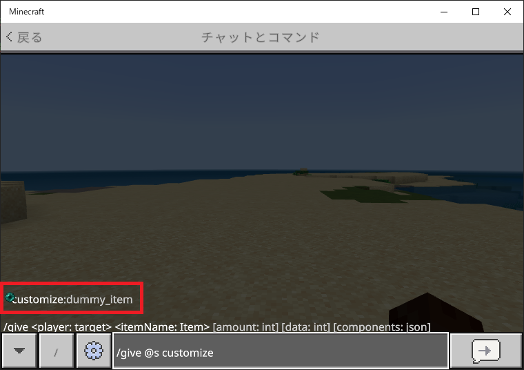
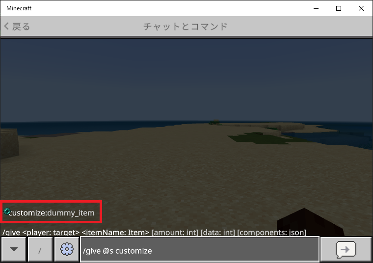

【ダミーアイテム】
はじめに
ここではダミーアイテムの作り方を通して、カスタムアイテムを作る上で最低限必要な基本部分の実装をまとめています。
本環境でのカスタムアイテムの作り方には大きく分けて以下の２種類があります。
本環境でのカスタムアイテムの作り方には大きく分けて以下の２種類があります。
- ①既存のアイテムにデータ値を付与
-
弓や矢などの装備アイテムにユニークなデータ値を付与する事により、ターゲットセレクタ等で一意の判定を行います。
データ値の付与の仕方は▶基本の書き方のページでご紹介していますのでそちらをご覧ください。 - ②アイテムを新規で作成
- 今回ご紹介する方法です。アイテムIDを新規で割り当てて実装します。
定義ファイルの内訳
カスタムアイテムを作るためにはビヘイビアパックとリソースパックの両方が必要になりますが、最低限以下の３ファイルを実装すれば完了します。
※ここでは
ビヘイビアパック内で必要になるファイル
リソースパック内で必要になるファイル
※ここでは
customize:dummy_itemというアイテムIDを使う想定でファイル名を記載しています。ビヘイビアパック内で必要になるファイル
/<ビヘイビアパックのルート>
/items
dummy_item.json
リソースパック内で必要になるファイル
/<リソースパックのルート>
/texts
en_US.lang
/textures
item_texture.json
定義ファイルの内容
ビヘイビアパック
items/dummy_item.json
{
"format_version": "1.20.50",
"minecraft:item": {
"description": {
"identifier": "customize:dummy_item",
"menu_category": {
"category": "equipment",
"group": "itemGroup.name.sword",
"is_hidden_in_commands": false
}
},
"components": {
"minecraft:icon": {
"texture": "dummy_item"
},
"minecraft:display_name": {
"value": "item.customize:dummy_item.name"
}
}
}
}
上記の黄色の部分は固定だとお考えください。
- ・description
-
- identifier
- アイテムIDを設定します。
- menu_category
-
menu_categoryブロック自体が未定義の場合はデフォルトでitems（アイテム）カテゴリに表示されます。- category
-
クリエイティブモード時にアイテムを表示するメニューカテゴリを文字列で設定します。
設定できる値は以下の通り。
- construction（構築）
- equipment（所持品）
- items（アイテム）
- nature（性質）
- none（指定なし）
noneの場合は特別で、groupやis_hidden_in_commandsの設定に係わらずメニュー上には表示されなくなりgiveコマンドも使えませんが、lootコマンドによる取得は可能です。
lootコマンドで利用できるようにするには▶基本の書き方でご紹介したJSONデータを作成しておく必要があります。 - group
-
アイテムグループを文字列で設定します。
categoryの内容と一致していないと認識されないので注意が必要です。
例えば"category": "equipment"の時、"group": "itemGroup.name.sword"は認識されますが、"group": "itemGroup.name.boat"は認識されません。
ちなみに、元々プラスマークが付いているグループを指定しないと意味はないようです。 - is_hidden_in_commands
-
アイテムをコマンドで利用できるかどうかを設定します（true:利用不可、false:利用可能）。
設定がtrueであってもlootコマンドは利用できます。
- ・components
-
このブロックでアイテムが持つさまざまな性質や機能を定義する事ができるので、見た目以外の部分でオリジナルコンテンツを作る時はこの部分の定義がメインになるでしょう。
定義内容についての詳細は以下の>> コンポーネント定義の項目をご覧ください。
リソースパック
texts/en_US.lang
item.customize:dummy_item.name=ダミーアイテム
ここではアイテム名を定義します。
カスタムエンティティを作成する場合と同様に
en_US.langファイルが規定の言語ファイルになります。textures/item_texture.json
{
"resource_pack_name": "family-customize",
"texture_name": "atlas.items",
"texture_data": {
"dummy_item": {
"textures": "textures/items/dummy_item"
}
}
}
上記の黄色の部分は基本的に固定ですが
resource_pack_nameの値にはあらかじめmanifest.json内のリソースパック名であるheader.nameの値を入れておく必要があります。- ・texture_data
-
このデータブロックに各アイテムのテクスチャファイルへのパスを列記します。
アイテムIDをキーとしたデータブロック内でtexturesキーの値としてパス（.pngの拡張子は省く）を設定します。
テクスチャファイルは、ここで指定したパスへ格納する必要があります。
テストしてみる
ここまで定義できればダミーアイテムとしての最低限の実装は完了です。
この時点で正しくアイテムを取得できるのかテストしておいた方がいいでしょう。
但し今のままでは取得できたとしても透明のままなので目視で確認する事ができません。
そこで以下の手順に従ってテストを進めてください。
動作を確認するだけであればバニラのリソースパック内にある

これが表示されればJSONファイルが正しく認識されています。
後は実際に
アイテムにカーソルを合わせた時に
あとは適当なタイミングでテクスチャファイル（今回の場合はリソースパック内の
この時点で正しくアイテムを取得できるのかテストしておいた方がいいでしょう。
但し今のままでは取得できたとしても透明のままなので目視で確認する事ができません。
そこで以下の手順に従ってテストを進めてください。
①ダミー画像を設置
リソースパック内のtextures/itemsの場所にダミー画像を格納してください。動作を確認するだけであればバニラのリソースパック内にある
textures/items/ender_pearl.png（エンダーパール）あたりを使っておけば、わざわざ作る必要がないので手間が省けるでしょう。textures/item_texture.json内のtexturesの項目で設定したdummy_itemという名前がファイル名になるのでdummy_item.pngという名前にしておきます。②コマンドで召喚する
コマンド行でgive @s customizeというところまで入力すると、入力補助の機能が働いて以下の赤枠部分のように選択できるアイテムIDが表示されるはずです。
これが表示されればJSONファイルが正しく認識されています。
後は実際に
giveコマンドを使って取得すると以下のように表示されます。アイテムにカーソルを合わせた時に
texts/en_US.langのファイルで定義しておいたアイテム名が表示されるかどうかも確認しておきましょう。あとは適当なタイミングでテクスチャファイル（今回の場合はリソースパック内の
textures/items/dummy_item.png）を正式なテクスチャファイルで入れ替えておいてください。コンポーネント定義
これまでの設定でベースの部分は出来上がりました。
あとは用途に応じてビヘイビアパック内にある
ここでは
※基本的に定義されていないデータブロック、および値は暗黙的にデフォルト値が適用されます。
あとは用途に応じてビヘイビアパック内にある
items/dummy_item.jsonファイルのcomponentsブロックに都度必要な定義を追加していく事になります。ここでは
componentsブロックのうち本環境で汎用的に使っている部分だけをピックアップしておきます。- ・minecraft:icon
-
- texture（デフォルト:なし）
-
リソースパック内の
textures/item_texture.jsonファイルに定義済のキーを設定してテクスチャファイルの場所を指示します。
- ・minecraft:display_name
-
- value（デフォルト:なし）
-
リソースパック内の
texts/en_US.langファイルに定義済のキーを設定する事で、そのキーに設定されているアイテム名が表示されます。
- ・minecraft:can_destroy_in_creative（デフォルト:true）
-
クリエイティブモード時にアイテムがブロックを破壊できるかどうかを設定します（true:破壊可能、false:破壊不可能）。
- ・minecraft:damage（デフォルト:0）
- アイテムによる攻撃時のダメージ量を設定します。
- ・minecraft:hand_equipped（デフォルト:false）
-
アイテム装備時の持ち方にするかどうかを設定します（true:装備アイテム、false:装備品以外）。
▼trueの時
プレイヤーが向いている方向に対して直線的な向きになり、少しサイズが大きく見えます。
▼falseの時
プレイヤーが向いている方向に対して９０度回転した向きになり、少しサイズが小さく見えます。
- ・minecraft:glint（デフォルト:false）
-
エンチャント付与状態の輝きのレンダリングの有無を設定します（true:レンダリング有り、false:レンダリング無し）。
エンチャントを付与していなくても適用されます。 - ・minecraft:enchantable
-
アイテムに適用できるエンチャントの種類を設定します。
- slot（デフォルト:なし）
-
エンチャントの種類を文字列で設定します。
例：sword、bowなど - value（デフォルト:なし）
- エンチャントの値を設定します。とりあえずゼロで問題ないようです。
※基本的に定義されていないデータブロック、および値は暗黙的にデフォルト値が適用されます。